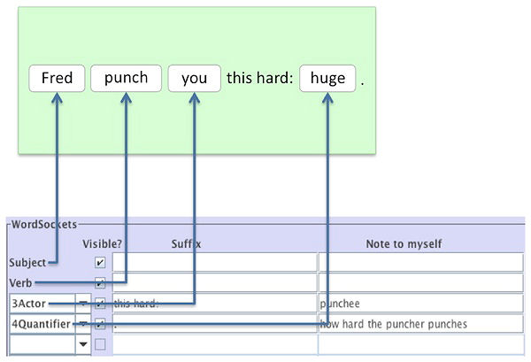
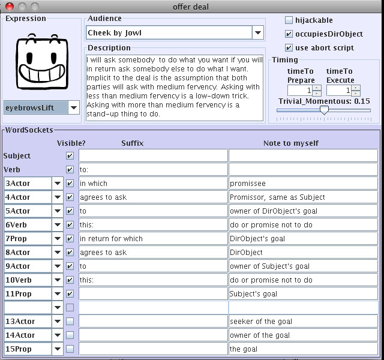
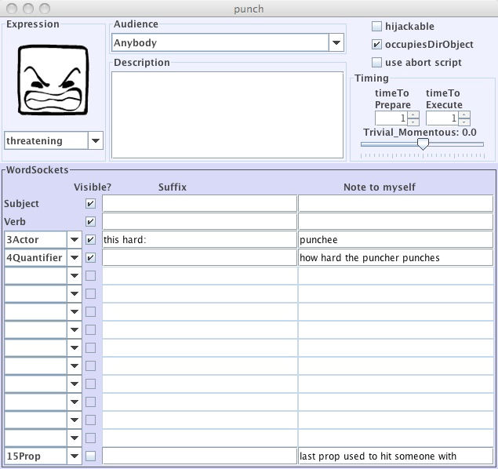

Every Verb has its own customized sentence structure. This sentence that you customize is what the Player interacts with in Storyteller. You define that sentence structure in the Properties dialog box, with the WordSockets that you set up for the Verb. The first two WordSockets are fixed and absolute: the first is the Subject, and the second is the Verb. (Why are they fixed and absolute? Storytronics is a web of interactions, which means every moment, something occurs: i.e., a sentence happens. That sentence must have somebody (the Subject) doing something (a Verb).) After that, you can have as few or as many WordSockets as you need for the Verb.
What's a WordSocket?
A WordSocket has two parts: its type and its content. The type of the WordSocket is just the standard data type for words: Actor, Prop, Stage, Verb, Quantifier, or Attribute. This aspect of WordSockets you set in the Properties box. The content is which specific object goes in the WordSocket. That piece you set in your script instructions for those WordSockets, wherever the Verb appears as an Option.
When you create a WordSocket in a Verb's Properties box, in other words, you are essentially creating a bucket designed to hold script instructions. You are telling SWAT, "These are the active words I want the player to be able to access for this Verb, in this order."
For example, the most common WordSocket is the third WordSocket, immediately after the Verb. This WordSocket often contains an Actor (e.g., the Direct Object of the Deikto sentence: "Fred punch you." "You" is 3Actor, the direct object of the sentence). The position of the word is the third position, and the data type for the WordSocket is "Actor." When you choose 3Actor, you are telling SWAT, "Put an Actor bucket in the third position of the sentence the player will see for this Verb."
In our Walkthrough, we also included how hard Fred and Tom can punch each other. "How hard?" is a Quantifier data type, and we put it in position four of the sentence. Here is how punch's WordSockets appear as a Deikto sentence in Storyteller, versus how they look in the Properties dialog box:

You can have a maximum of 15 WordSockets in a Sentence, and (except for the Subject and the Verb), they are designated by a standard system consisting of the socket number (where it appears in the sentence), followed by the data type (is it an Actor, a Stage, a Prop, a Quantifier, or an Attribute?. For example, "9Stage" refers to the ninth WordSocket, which is of data type "Stage."
When you first create a Verb, its Properties dialog box shows that only the first two WordSockets are active: the Subject and Verb of the Deikto sentence the player will see, as mentioned above. To add more WordSockets to your Deikto sentence, simply click on the blank space for the WordSocket at the left edge of the Properties dialog box, and a popup menu will appear listing the available data types. The topmost of these is empty, indicating indicating that you want the WordSocket to be left empty. If you select anything else, then that WordSocket is active.
However, there's a difference between "active" and "visible to the player." Why? Because sometimes you want to include information in the Sentence that you will use for your own purposes, but you don't want the player to see it. We'll talk more about this feature later, but for now, all you need to know is that the little checkbox just to the right of the popup menu will, if unchecked, prevent that word from being displayed to the player.
WordSocket Suffixes and Notes
Moving further to the right from the popup menu, there's a space for what we call the "suffix." This is additional text that you want to be included in the Deikto Sentence to make it more like normal language. This text doesn't matter at all to the Story Engine, but it helps the player. Here's a good example of the value of suffixes:

This shows the Properties dialog box for the Verb "offer deal" in Balance of Power: 21st Century. Notice how many WordSockets are used—this is an exceptionally complicated Verb!
Note all the suffixes. Here's what the Deikto sentence might look like if we didn't have the suffixes:
USA offer deal China USA Japan do Japan apologize to China China Afghanistan do Afghanistan hand over bin Laden.
Doesn't make any sense, does it? Now, here's the same sentence with the suffixes:
USA offer deal to China in which USA agrees to ask Japan to do this: Japan apologize to China in return for which China agrees to ask Afghanistan to do this: Afghanistan hand over bin Laden.
That makes a lot more sense, doesn't it? That's the value of suffixes: they allow you to flesh out the sentence with additional text so that it makes more sense. In fact, when we created the Verb "run away from" in our testing storyworld, we could have used the suffix "from" and just called the Verb "run away from."
On the far right side of the Properties box is a set of slots called "Note to myself". These are very useful for keeping straight which WordSocket carries which component. We have even included a nice touch: if you hover the mouse over a WordSocket title in the Options display of the Verb Editor, your "Notes to Yourself" for that WordSocket will pop up.
WordSockets Exercise 1: Using Suffixes and Notes
For this exercise, return to your testing storyworld. Make the following changes:
Go to the Verb hit with. Open the Properties window and add the suffix "the" to 3Actor. To 4Prop, add ", this hard:" as a Suffix. Put something like this, "object you use to hit your adversary with," as a Note under 4Prop. For 5Quantifier, add a period in the Suffix field, and "how hard you hit your adversary" as a Note.
Now close the Properties dialog. Look under your Options dropdown, and select hit with as an Option. You should see WordSockets for DirObject, 4Prop, and 5Quantifier. Place your mouse over the 4Prop header and leave it there a moment. You should see your Note as a tooltip. Ditto with 5Quantifier.
Make similar kinds types of changes to the WordSocket Suffixes and Notes for punch, run away from, and plead to desist. Experiment with various Suffixes and then run Storyteller Lizard, to see what kind of effects you can get in Deikto. Try adding Notes that give you reminders as to what each WordSocket is supposed to be, and then hover over the corresponding WordSocket headers to see how they work.
Housekeeping WordSockets
Here's another useful thing you can do with WordSockets. Take another look at the Balance of Power: 21st Century example, above. Note that the last three WordSockets (13Actor, 14Actor, and 15Prop) are not visible to the player. Chris discovered while working on his storyworld that in many Verbs he needs to use the "seeker of the goal", the "owner of the goal", and "the goal" in his Scripts. He decided to include them in every single Verb in WordSockets 13, 14, and 15. They get carried through every Event, so that anytime he needs to write a new Script, he already knows that he has these three key elements immediately at hand.
Using WordSockets like this saves a lot of wear and tear as you create your storyworld. It helps you avoid having to craft complicated HistoryBook Lookups that might result in a Poison.
WordSockets Exercise 2: Using Invisible WordSockets
Even in a simple storyworld, this kind of housekeeping WordSocket can be useful. Recall that in the testing storyworld, in punch: punchee: hit with: 4Prop: Desirable, we used this:
BInverse of:
Harmless_Lethal of:
CandidateProp
This tells the Actor to use the least lethal Prop available.
Whereas, in hit with: hittee: hit with: 4Prop: Desirable, we used this:
This tells the ReactingActor to choose as a weapon the Prop next up the lethality scale from the Prop he just got hit with.
Why didn't we use the same 4Prop construction for the Option hit with under punch as we did for the Option hit with under the Verb hit with? Quite simply, we couldn't. If we tried to use the exact some construction of hit with: 4Prop for punch as we did for hit with, we would get an error message. To test this for yourself, go to punch: punchee: hit with: 4Prop: Desirable, and try to create the PickUpperIf script above. Notice that when you try to select This4Prop, there is no way to select it from any of the lists. Why? Because punch doesn't use a which 4Prop was used the last time someone decided to do hit with, and as we've mentioned before, HistoryBook lookups can get very messy.
Instead, try this. For all of the Verbs in your testing storyworld except run away, go into the Properties box and create an invisible 15Prop. Label it with a Note that says something like: "last prop used to hit someone with." It should look something like this:

After completing this for all your Verbs, you will find that all Options for all three of your Verbs—punch, hit with, and plead to desist—now have a WordSocket for 15Prop. (Why did we not do this for run away from? Because run away from ends your storyworld, so you no longer care which Prop was last used to hit with. Thus there is no need to give yourself the extra work of creating a WordSocket for it.)
Now you need to do some housekeeping, to make sure 15Prop is properly carried through all the interactions. It seems as if it might be a lot of work, but in fact it's not. Wherever the Option hit with appears, this is where we first go to set 15Prop. This is because the Actors choose a new Prop to hit each other with whenever they choose hit with.
To start, go to punch: punchee: hit with: 15Prop: Acceptable and enter this:
AreSameProp
CandidateProp
Chosen4Prop
This says, whichever 4Prop the ReactingActor has chosen to clobber his adversary with, store the name of that Prop under 15Prop as well.
Now copy the entire Option hit with (Edit > Copy Option), and go to the each of the other Roles for Verbs in your storyworld (punch and plead to desist). Wherever you find an existing Option hit with, delete the old version. To do so, select hit with in the Options dropdown list, then click on the red minus sign. Next, paste the Option (Edit > Paste Option) to add the new version of hit with to your Options list.
Check whether you got all the new hit with Options installed correctly by double clicking on hit with in the pink Verbs list. Select Comefroms Lizard(Lizards > Comefroms Lizard). This will give you a clickable list of all places where you used hit with as an Option. All the 15Prop scripts for Option: hit with should look like the above.
Return to the verb punch. For every other Option, the Acceptable script for 15Prop will look like this:
AreSameProp
CandidateProp
This15Prop
This carries 15Prop forward as the last Prop used for clobbering purposes, until someone next chooses the Option hit with. Now you can either copy the script above, and paste it into all your non-hit-with Options for the Verbs punch, hit with, and plead to desist.
Before we go on, let's take a moment to answer a question that may be in your mind. Why the difference between 15Prop Acceptable scripts for hit with versus the others? The answer is that hit with is the only action taken that changes what the last prop used is. In fact, for extra credit, try copying and pasting the script for hit with's 15Prop into one of the others, and watch what happens. You will get an error message telling you that there is no Chosen4Prop for, say, punch. Which is true—Chosen____ can only be used for WordSockets that exist for that Option.
You can make sure you got all the 15Prop scripts correctly assigned in either of two ways. First, go to punch and select Comefrom Lizard. This will give you a clickable list of all places where you used punch as an Option. Paste the script in for 15Prop: Acceptable for all punch come-froms. Use the back arrow to return to punch, and select the next one on the list. Then do the same process for plead to desist.
Last but not least, if you want to make sure you got all of them, go to Search Lizard and look for ?Condition?. Replace any undefined terms for 15Prop: Acceptable with one of the two scripts above.